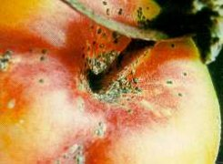
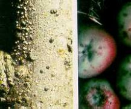

Kaliforniai pajzstetű
Quadraspidiotus perniciosus
Almás termésű és csonthéjas gyümölcsfák veszélyes kártevője. Kártételét telepesen a pajzsok védelme alatt idézi elő. Telepeit főképpen a hajtásokon találjuk, de károsít gyümölcsön és levélen egyaránt. Szívogatása nyomán a pajzs körül piros gyűrű keletkezik. A szívogatott gyümölcs héján az úgynevezett "lázfoltok" maradnak vissza. Kétnemzedékes, a fiatal lárva telel át. Az első nemzedék kifejlődése júniusig tart. Az új nemzedék lárvái 1-2 napon belül letelepednek, megkezdik a még sérülékeny, úgynevezett "fehér pajzs" kiválasztását. Egy héten belül növényvédő szerekkel szemben jól ellenálló, fekete pajzsot hoznak létre. A második lárvanemzedék születése augusztus közepétől szemptember végéig tart.
Védekezés:
- Tél végi lemosó permetezés (rügypattanásig).
- Rajzó alakok elleni permetezés előrejelzés alapján.
Javasolt szerek:
Novenda vagy Gyümölcsfaolaj (lemosó permetezéssel).
|  |